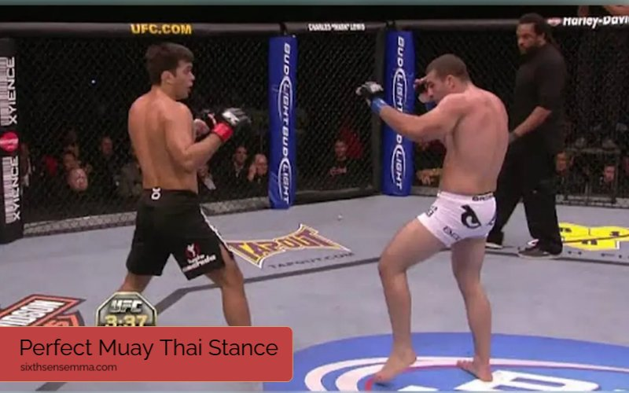
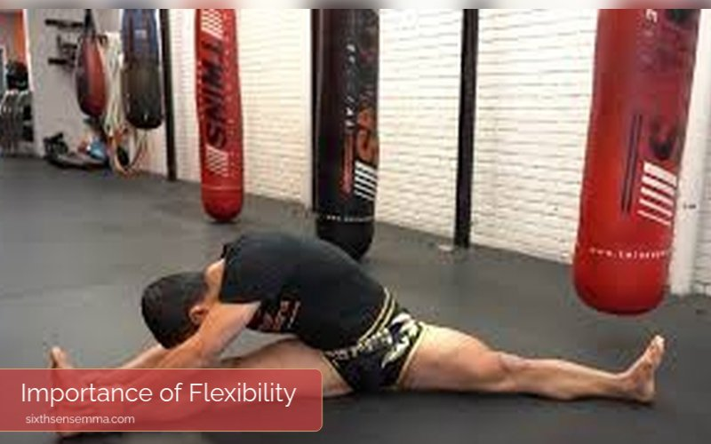
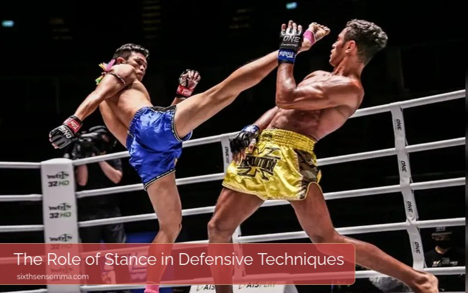

Master the Perfect Muay Thai Stance for Victory

Intense training is required to reach the level of expertise where one has mastered the Muay Thai stance. A technically correct stand does not only improve your hand-to-hand combat skills, but it can also ensure you have good balance and do not give a chance to your opponents to get you down.
We aim to help you the readers have a good grasp of the key points of the Muay Thai stance which are foot positioning, body alignment, and common mistakes to avoid. To grasp this foundational technique thoroughly enough to integrate it into your fighting strategy, there is much more work to be done, including methods that deal with flexibility and other topics that show the subtleties of this basic knowledge can elevate your playing level beyond recognition.
For More Information Contect Us:
Muay Thai Classes by Age Group
Children (Ages 5-12)
Beginner Classes:Emphasis on simple techniques, like traditional Muay Thai stances, footwork, and basic positions. Not only this, but they are to be able to have fun while moving, as well as to be able to control their speed and direction, while exercising good posture, and possess self-discipline.
Fitness and Skills: The children’s learning process is made more interesting through games which help them to master the basic movements.
Teens (Ages 13-17)
Intermediate Classes: This training course further enhances students’ knowledge about the stances and techniques that are included, with great attention to the significance of a firm stand, enhancing the balance and strength of the target to be hit.
Technique and Sparring: Besides that, children will have the opportunity to do controlled sparring during the course using the right stances and defending techniques.
Adults (Ages 18 and up)
Advanced Classes: These classes will mainly focus on stances, getting to know the body, practicing signals for good performance, and strategies for competition. Refined techniques are what they will be doing apart from sparring matches to become better at sparring and being involved in competitions.
Conditioning and Techniques: The classes offer fitness programs, strength training, and an appropriate sense of balance in self-defense and striking to the students.
Common Muay Thai Stances
Common Fighting Position: One’s legs shall be placed apart the width of their shoulders, their knees only a little bent, and their hands up to safeguard the upper body as they come close to the hips.
Southpaw Stance: For a left-handed fighter, one’s right foot is the first to face the front.
Relaxed Stance: Used in less threatening situations, this way of standing balances out the conflict between attentiveness and relaxation.
Muay Thai Stance: A Brief Overview
The stance position is a typical component of any sport that is used to move for combat training. It gives you way more power and control than you’ve ever had. Here we will concentrate on a comprehensive description of the function and benefits of the stance. On the other hand, the stability of the stance plays the most important role in creating a successfully offensive or defensive move during the match. The grounding of a strong Thai Stance enables the fighters to easily throw attacks and block strikes as well.

The Muay Thai Stance: What Makes It Good?
The perfection of the stance means that quite a few different components are put in place that some of them are essential to the tactical effectiveness of the fighter. Areas to be analyzed are the positioning of the feet, the alignment of the hips, and the entire alignment of the body. A good base is made up of these factors. If the right foot is kept fixed and straight in the Muay Thai style, one will be able to move with great speed, whereas the powerful strikes can only be done if one gets the correct hip position and maintains the balance.
| Element | Importance |
|---|---|
| Foot Positioning | Crucial for mobility and balance |
| Hip Alignment | Generates striking power and stability |
| Body Structure | Supports effective techniques |
Foot Positioning Techniques
When you have foot positioning, the balance and the ability to move around are essential. Using the traditional style or the southpaw style, you will notice that each position makes you fight or move differently than your opponent.
Southpaw Versus Orthodox Stance
The left-foot-forward position, which is also known as orthodox stance, is usually adopted by the Muay Thai practitioners; but instructing the southpaw style, using the right foot leading, can still lead to the staggering of one’s adversary. Advantages of each position suddenly appear. For those in the Muay Thai tradition, the knowledge of the connection between the position of your foot and range should be one’s main concern.
| Stance | Advantages | Disadvantages |
|---|---|---|
| Orthodox | Familiarity; Easier for most fighters | Predictable for skilled opponents |
| Southpaw | Surprise factor; Creates different angles | May be less practiced |
Wide vs. Narrow Stance
Pursue both a wide and a narrow stance as it has benefits and drawbacks for each one. A wide stance is stable but it can impair agility. On the one hand, a narrow position allows rapid foot movements, while on the other hand, it may lack support during heavy blows. The ability to change your stance is a strategic tool that should be developed by every fighter.
Body Alignment and Balance
Alignment and Balance Good body posture is an essential factor in maintaining a good sense of balance during martial arts To ensure the correctness of the captions, you need to make sure that the feet are at hip distance apart for better balance. Stick the shoulders to the back by maintaining your body in a line and not moving to the side. With this body conditions, you will easily strike a stable and well-controlled blow.

Importance of Flexibility
As a fighter flexibility is a big favor when it comes to obtaining a correct Thai kickboxing stance. One of the ways to enhance the mobility of the body is to perform regular stretching and conditioning exercises. By doing so, the fighter can transition from multiple hit locations which is the key to the opponent’s unpredictability.
Here are some stretches to consider:
| Stretch | Benefits |
|---|---|
| Hip Flexor Stretch | Improves mobility for kicks |
| Hamstring Stretch | Enhances balance during stance |
| Shoulder Stretch | Improves reach and striking ability |
Common Mistakes in Stance
Even the best fighter can still make the mistake of being in the wrong stance from time to time. The most common mistakes are having a backward leaning posture and not using hip rotation. It is crucial to avoid these mistakes in order to retain a good Muay Thai stance. Be mindful of these omissions and be sure to concentrate on core stability and upper body mobility when you are generating the angles (Chinese et al., 2002). While striking, always have your hips turning and be well-balanced and symmetrical in your overall body position. You can practice in front of a mirror to correct your errors and develop better form.
Incorporating Movement into Your Stance
A stance without any movement in dynamic combat is less effective than a mobile one. Fluid movement is the essence of the whole process. Moreover, instruct and discuss about moving in a way to enhance both offensive and defensive capacity while at the same time having a solid base. Perform lateral moves and step forwards and backwards by a second nature approach.
Drills for Movement and Stance
Let’s look at some drills to practice maintaining your stance while moving:
- Shadowboxing: Focus on maintaining your stance while incorporating footwork.
- Partner Drills: Practice with a partner, allowing for strike and defensive movements while maintaining stance accuracy.
These exercises reinforce good habits and develop muscle memory.
Psychological Impact of Stance
The mental aspect of fighting is often overlooked. A strong stance can enhance a fighter’s confidence and presence in the ring. Fellow fighters will feel more secure and commanding.
When you’re confident in your stance, you can focus on your strategy rather than worrying about your balance or form. This mental clarity often translates into better performance. It’s often said that confidence comes from preparation, and the right Muay Thai stance is a solid part of that preparation.
Analyzing Professional Fighters’ Stances
Let’s take a look at some well-known fighters and examine their stances. Notable practitioners like Saenchai and Buakaw demonstrate diverse applications of the Muay Thai stance.
- Saenchai is famous for his fluid movements and adaptability in the ring. His stance allows him to execute defensive maneuvers seamlessly while shifting into offensive strikes.
- Buakaw, on the other hand, is known for a more powerful and aggressive stance that allows him to generate incredible striking power.
Both fighters effectively adapt their stances to suit their fighting styles. They offer great lessons in how even slight adjustments in the stance can change the tide of a match.

The Role of Stance in Defensive Techniques
A strong Muay Thai stance aids in defensive movements against strikes. Techniques such as blocking and evasive footwork become easier with a solid foundation.
In particular, when you maintain an effective defensive Muay Thai stance, you’re better equipped to execute maneuvers like the shoulder roll. This technique involves tilting your shoulder slightly to absorb and deflect an attack while maintaining the stance.
Evasive Footwork
Evasive footwork is essential in employing defensive techniques effectively. Work on sidestepping and pivoting without losing your stance. These movements help create angles to avoid strikes while keeping the ability to counterattack.
Adjusting Stance for Different Opponents
It’s crucial to adapt your stance based on the opponent’s style. For instance, a fighter who prefers grappling may require you to maintain more of a grounded stance for stability and balance, rather than one that is more dynamic.
Conversely, if you face a striker with a fast-paced style, adjusting your stance to be more mobile can help you evade their powerful strikes. Understanding the different pressure fighting styles can give you a strategic edge in each match-up.
Training Partners and Sparring
Practicing with training partners and during sparring sessions can significantly refine your stance. Communication is key here—sharing feedback with partners can help identify strengths and weaknesses in your posture and movements.
- When sparring, pay attention to how your stance holds up against your partner’s tactics. Maintaining a strong stance under pressure can help you keep composure in real fight situations.
Partner drills where you focus specifically on stances can greatly improve fight preparation. For duration and intensity, simulate fight scenarios to reinforce the importance of maintaining the correct stance in varying combat situations.
Utilizing Video Analysis for Improvement
In today’s tech-savvy world, video analysis has become an invaluable tool for martial arts training. Watching footage of yourself can provide insights into how effectively you maintain your Muay Thai stance during practice.
Consider setting up your phone or camera during training to capture your movements. When you review this footage, look for areas where your stance might falter. Are you leaning too far back? Is your foot positioning in Muay Thai optimal? Discussing this footage with a coach can lead to focused feedback on how to improve.
Conclusion
Mastering the Muay Thai stance is pivotal for achieving victory in the ring. A solid, adaptable stance can significantly enhance a fighter’s overall performance and strategy. By focusing on the fundamentals, including proper foot positioning in Muay Thai, body alignment, and mental preparation, each fighter can develop their own successful techniques.
Remember, a great Muay Thai stance isn’t just about standing still; it’s about being ready to react, striking when the moment is right, and feeling confident while doing it.
FAQ’s
There are primarily two main stances in Muay Thai: the orthodox and southpaw stances.
The Muay Thai stance can be less mobile than other martial arts stances, making side-to-side movement challenging.
The preference between boxing and Muay Thai depends on individual goals, as each offers unique techniques and benefits.
A lean and muscular body type is often considered ideal for Muay Thai, as it promotes agility, speed, and power.
Yes, 12-6 elbows (striking in a downward motion) are illegal in Muay Thai and considered dangerous.
No single martial art is categorically better; it depends on personal preference, goals, and training context.
One disadvantage is that it can lead to a greater risk of injury due to its emphasis on striking.
Boxing can defeat Muay Thai in a boxing match, while Muay Thai techniques are not allowed in boxing competitions.
Techniques such as elbow strikes to the back of the head, headbutts, and strikes to the groin are banned in Muay Thai.
The roundhouse kick is often considered one of the most powerful and effective strikes in Muay Thai.
Train with us in Coppell
The first class is free. Shorts, a t-shirt and a water bottle. We lend the rest.
Book a free class